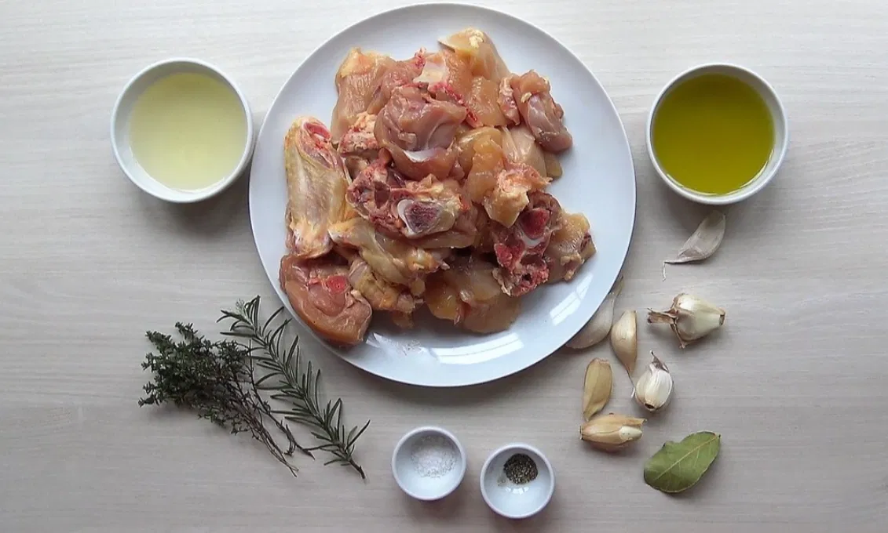
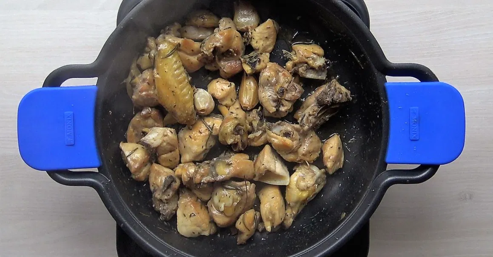

Aprende a preparar el clásico pollo al ajillo, el tradicional de toda la vida de la cocina española. Tanto es así que raro es el bar o restaurante que no cuenta con este plato en su carta, bien como tapa o como sugerencia en la mesa.
El pollo es el ingrediente estrella, aromatizado con hierbas y, cómo no, con ajo. El pollo es una carne baja en grasa, de gran valor nutricional. Muy fácil de digerir y que además se puede preparar de mil maneras. En el blog tenéis un montón de recetas de pollo, soy el fan número uno de este tipo de recetas, la mayoría son muy sencillas y sobre todo baratas. Quizás esta receta con pollo es una de las más visitadas junto con el pollo al horno con patatas.
Y es que esta receta recuerda a infancia, a preparar algo fácil para comer el domingo y que a toda la familia le gustase. Si encima mi abuela Lucrecia nos regalaba un pollo de corral, de esos alimentados como uno más de casa, el resultado era delicioso. Esa salsita que quedaba de la fritura, con los ajos picados y avenallados, y con un toque de vinagre para el más atrevido hacía las delicias de un buen trozo de pan. Si encima te dejaban meterlo en la sartén directamente, ya era la gloria.
Cómo hacer el pollo
Lo primero que hacemos al comprar el pollo es pedirle al carnicero que nos lo trocee. Ya en casa limpiamos bien los trozos de restos de grasa y les retiramos la piel salvo a las alitas. Eliminar la piel es opcional, pero considero que añade al plato un exceso de grasa innecesaria. Salpimentamos los trozos ligeramente.
En una cazuela ancha ponemos a calentar abundante aceite de oliva virgen extra y echamos los ajos sin pelar. Los cocinamos a fuego medio, estando pendientes de que no se nos quemen. La idea es que queden caramelizados y que sirvan de aromatizante de nuestro aceite. Cuando vemos que están blanditos tras unos 5 minutos, los retiramos y reservamos.
Añadimos los trozos de pollo a la cazuela con el aceite aromatizado de los ajos, junto con la hojita de laurel, la rama de romero y el tomillo.
El pollo debe de quedar bien frito, lo cual nos llevará unos 15 a 20 minutos por lo menos. Tenemos que estar pendientes de darle la vuelva a los trozos de vez en cuando para procurar que quede tostadito por todas partes. No se trata simplemente de dorarlo y sellarlo como cuando lo preparamos para un guiso. Lo que queremos es que el pollo quede perfectamente cocinado y tierno por dentro y tostadito por fuera.


Cocción y presentación final del pollo al ajillo
Cuando vemos que nuestra carne está casi lista retiramos el exceso de aceite. Añadimos de nuevo los ajos que tenemos reservados y agregamos el vino. Seguimos cocinando la carne hasta que el vino se haya reducido casi por completo.
Si no tenemos vino de Jerez podemos emplear perfectamente cualquier otro vino blanco de calidad que tengamos por casa. Un Albariño, un Godello… el Jerez le da un toque particular, pero con cualquiera de estos quedará estupendamente. Servimos calentito en la mesa con un poco de perejil picado por encima o cilantro. Sólo nos queda disfrutar de este auténtico “platazo”.
Echad un poco de la salsa que quedará en la cazuela por encima. No os olvidéis de un buen pedazo de pan para degustar esta salsa de pollo, vino y ajo. Simplemente delicioso os lo aseguro, sólo puedo decir que lo probéis en casa, una recetaza de mi madre y ya me contaréis…